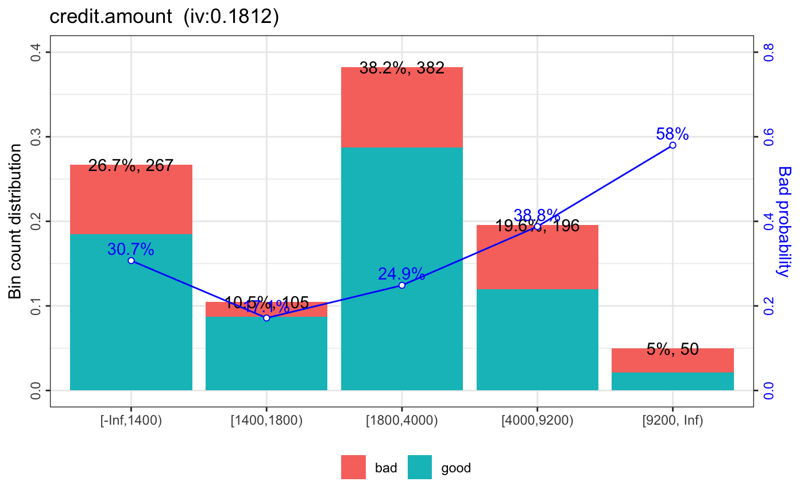

woebin_plot create plots of count distribution and bad probability for each bin. The binning informations are generates by woebin.
woebin_plot(bins, x = NULL, title = NULL, show_iv = TRUE)
| bins | A list or data frame. Binning information generated by |
|---|---|
| x | Name of x variables. Default is NULL. If x is NULL, then all columns except y are counted as x variables. |
| title | String added to the plot title. Default is NULL. |
| show_iv | Logical. Default is TRUE, which means show information value in the plot title. |
A list of binning graphics.
# Load German credit data data(germancredit) # Example I bins1 = woebin(germancredit, y="creditability", x="credit.amount")#> [INFO] creating woe binning ...#> $credit.amount#># NOT RUN { # Example II bins = woebin(germancredit, y="creditability") plotlist = woebin_plot(bins) print(plotlist$credit.amount) # # save binning plot # for (i in 1:length(plotlist)) { # ggplot2::ggsave( # paste0(names(plotlist[i]), ".png"), plotlist[[i]], # width = 15, height = 9, units="cm" ) # } # }